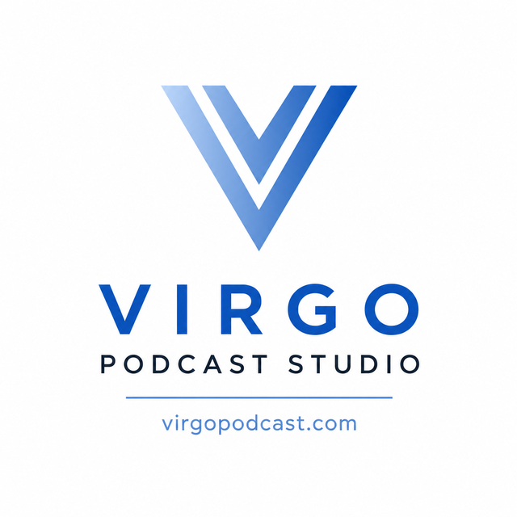
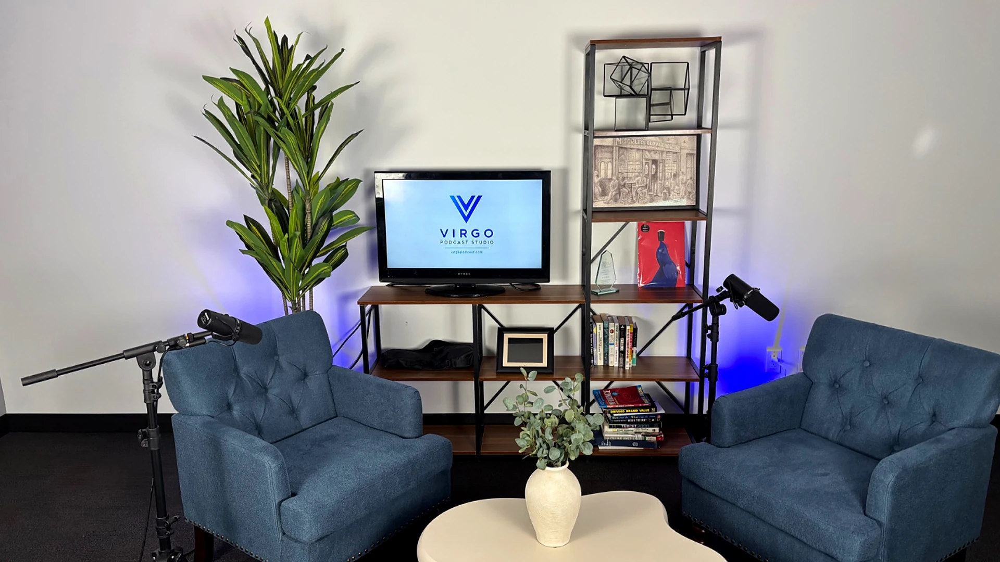
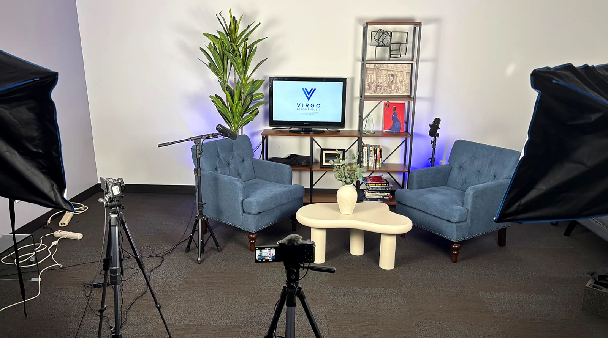
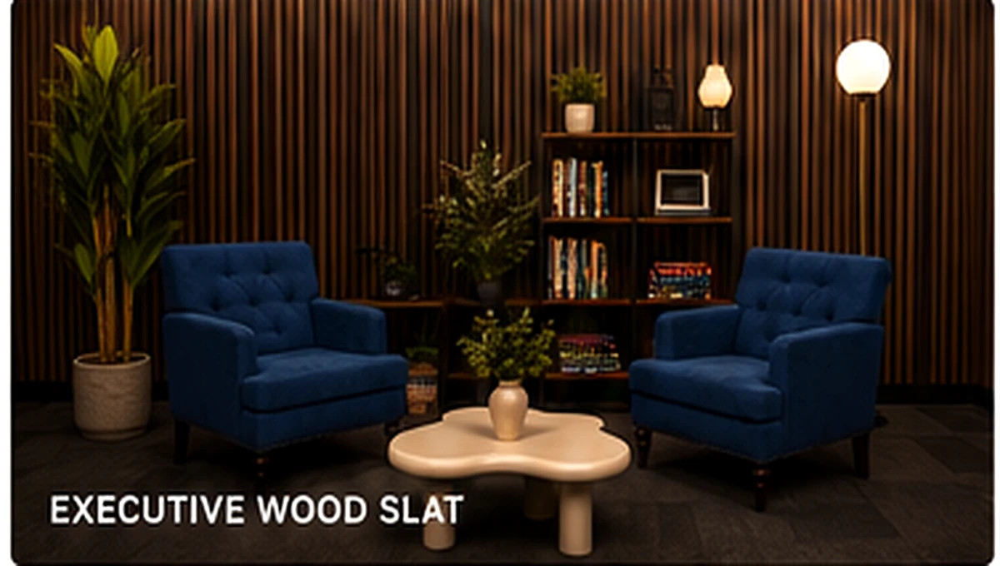
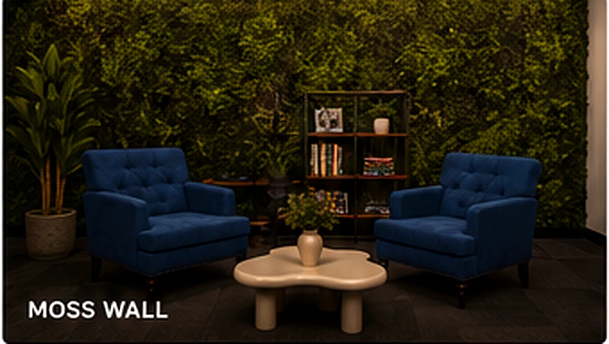
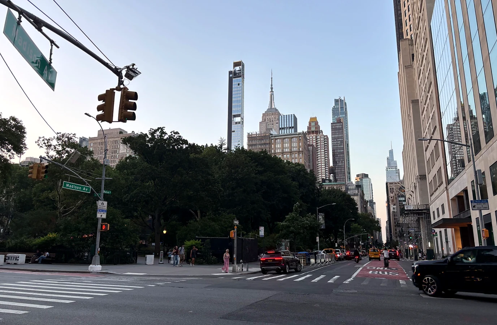
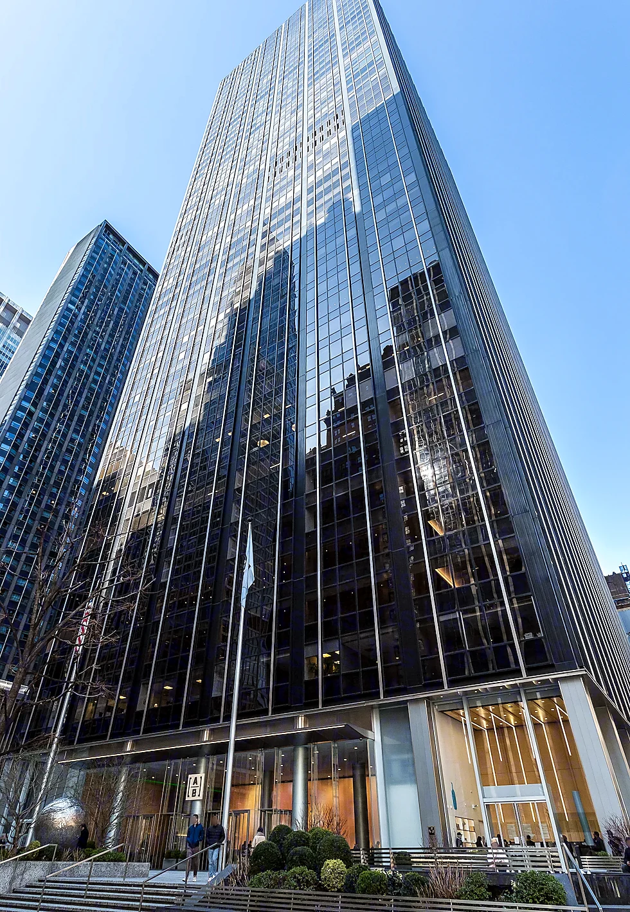

Podcast & Video Recording
Producer-supported sessions with professional sound, multi-camera video and lighting.


A cozy Midtown Manhattan studio
Professional podcast and video production in an inviting Midtown setting—with an on-site producer, multi-camera recording, editing, social content and remote guest support.
The actual studio
VIRGO is designed as a comfortable Midtown recording room—not a cold soundstage. Settle into the chairs, focus on the conversation, and let the producer handle the technical side.

Audio, visual and content creation
Producer-supported sessions with professional sound, multi-camera video and lighting.
Audio cleanup, camera switching, color correction, titles, intros, outros and a polished final episode.
Short-form edits for Instagram Reels, TikTok, YouTube Shorts and LinkedIn, with captions and branded graphics designed to help you reach more people.
Invite a remote speaker, expert or co-host. We integrate the virtual guest into the recording and finished edit.
For all your corporate video recording needs: interviews, training, testimonials, presentations and internal communications.
A one stop podcast starter kit for creators and companies launching a show from concept through distribution-ready content.
Customizable studio backdrops
Choose a polished backdrop that fits your show or company. Background options are subject to production needs and quoted with the package.


Flexible pricing
Custom backdrops, additional editing, advanced graphics, extra clips and specialized corporate productions may require a custom quote.
In the heart of Midtown
Record at 1345 Avenue of the Americas, 2nd Floor—near Bryant Park, Rockefeller Center, Times Square, Grand Central and major subway lines.


Frequently asked questions
Yes. In addition to the in-studio conversation, we can bring in a third remote guest and include them in the recorded program and edited video.
Yes. The social package can include vertical clips, captions, hooks, branded graphics and exports for Instagram, TikTok, YouTube Shorts and LinkedIn.
Yes. We support executive interviews, testimonials, training videos, presentations, internal communications and other corporate recording needs.
Email ezraberke@virgopodcast.com or call/text (214) 903-6838 with your preferred date, session length and package.
A cozy place for your next conversation.